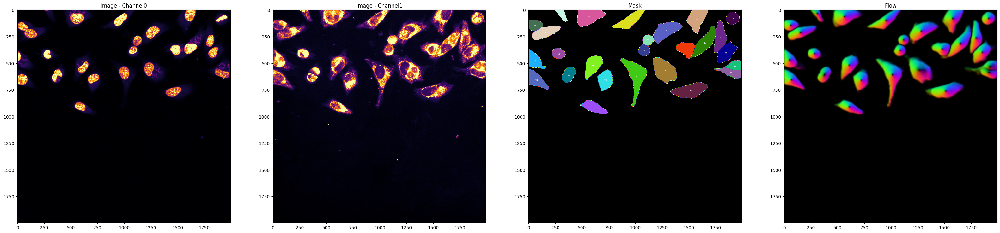

1. Generate Segmentation Masks

Processing folder: /home/olafsson/datasets/plate1
Found path: /home/olafsson/datasets/plate1
Saving settings to /home/olafsson/datasets/plate1/settings/gen_mask_settings.csv
Starting Test mode ...
Found 208 tif files
Image_format: tif
regex mode:cellvoyager regex:(?P.*)_(?P.*)_T(?P.*)F(?P.*)L(?P..)A(?P..)Z(?P.*)C(?P.*).tif
Running spacr in test mode
Found 208 files
Using 10 random image set(s) for test model
All files: 40 in /home/olafsson/datasets/plate1/test
All unique FOV: 40 in /home/olafsson/datasets/plate1/test
Progress: 1/40, operation_type: Preprocessing filenames, Time/batch: 0.434sec, Time/image: 0.009sec, Time_left: 0.282 min.
...
Progress: 40/40, operation_type: Preprocessing filenames, Time/batch: 0.553sec, Time/image: 0.011sec, Time_left: 0.000 min.
List of folders in src: ['1', '2', '3', '4']. Single channel folders.
Generated folder with merged arrays: /home/olafsson/datasets/plate1/test/stack
Progress: 1/10, operation_type: Merging channels into npy stacks, Time/image: 0.220sec, Time_left: 0.033 min.
...
Progress: 10/10, operation_type: Merging channels into npy stacks, Time/image: 0.196sec, Time_left: 0.000 min.
plotting 1 images from /home/olafsson/datasets/plate1/test/stack
Image path:/home/olafsson/datasets/plate1/test/stack/plate1_E02_21_1.npy

Progress: 1/10, operation_type: Concatinating, Time/image: 0.005sec, Time_left: 0.001 min.
Progress: 1/10, operation_type: Concatinating, Time/image: 0.005sec, Time_left: 0.001 min.
...
Progress: 10/10, operation_type: Concatinating, Time/image: 0.005sec, Time_left: 0.000 min.
Processing channel 0: background=200, signal_threshold=1000, remove_background=False
Channel 0: global_lower=12.0, global_upper=3825.0, Signal-to-noise=318.75
Progress: 1/3, operation_type: Normalizing, Time/image: 0.697sec, Time_left: 0.023 min.
Processing channel 3: background=100, signal_threshold=1000, remove_background=False
Channel 3: global_lower=113.0, global_upper=2195.0, Signal-to-noise=19.424778761061948
Progress: 2/3, operation_type: Normalizing, Time/image: 0.636sec, Time_left: 0.011 min.
Processing channel 2: background=400, signal_threshold=2000, remove_background=True
Channel 2: global_lower=423.0, global_upper=6262.0, Signal-to-noise=14.803782505910165
Progress: 3/3, operation_type: Normalizing, Time/image: 0.518sec, Time_left: 0.000 min.
All files concatenated and normalized. Saved to: /home/olafsson/datasets/plate1/test/masks
{'diameter': 160, 'minimum_size': 6400.0, 'maximum_size': 256000, 'merge': False, 'resample': True, 'remove_border_objects': False, 'model_name': 'cyto2', 'filter_size': False, 'filter_intensity': False, 'restore_type': None}
{'nucleus': [0, 0], 'pathogen': [0, 2], 'cell': [0, 1]}
Device 0: NVIDIA GeForce RTX 3090, VRAM: 23.56 GB, cellpose batch size: 48
Number of objects, : 27

object_size:cell: 17147.916 px2
Progress: 1/3, operation_type: cell_mask_gen, Time/image: 35.657sec, Time_left: 1.189 min.
{'diameter': 75, 'minimum_size': 1406.25, 'maximum_size': 56250, 'merge': False, 'resample': True,
'remove_border_objects': False, 'model_name': 'nuclei', 'filter_size': False, 'filter_intensity': False,
'restore_type': None}
{'nucleus': [0, 0], 'pathogen': [0, 2], 'cell': [0, 1]}
Device 0: NVIDIA GeForce RTX 3090, VRAM: 23.56 GB, cellpose batch size: 48
Number of objects, : 34
object_size:nucleus: 6683.251 px2
Progress: 2/3, operation_type: nucleus_mask_gen, Time/image: 23.892sec, Time_left: 0.398 min.
{'diameter': 40, 'minimum_size': 400.0, 'maximum_size': 16000, 'merge': False, 'resample': False,
'remove_border_objects': False, 'model_name': 'cyto', 'filter_size': False, 'filter_intensity': False,
'restore_type': None}
{'nucleus': [0, 0], 'pathogen': [0, 2], 'cell': [0, 1]}
Device 0: NVIDIA GeForce RTX 3090, VRAM: 23.56 GB, cellpose batch size: 48
Number of objects, : 22
object_size:pathogen: 1697.431 px2
Progress: 3/3, operation_type: pathogen_mask_gen, Time/image: 19.432sec, Time_left: 0.000 min.
Adjusting cell masks with nuclei and pathogen masks
Progress: 1/10, operation_type: adjust_cell_masks, Time/image: 0.422sec, Time_left: 0.063 min.
...
Progress: 10/10, operation_type: adjust_cell_masks, Time/image: 0.577sec, Time_left: 0.000 min.
Cell mask adjustment: 0.09624974330266317 min.
Progress: 1/10, operation_type: Merging Arrays, Time/image: 0.076sec, Time_left: 0.011 min.
...
Progress: 10/10, operation_type: Merging Arrays, Time/image: 0.075sec, Time_left: 0.000 min.
Progress: 1/42, operation_type: Plot mask outlines, Time/image: 3.719sec, Time_left: 2.541 min.
×